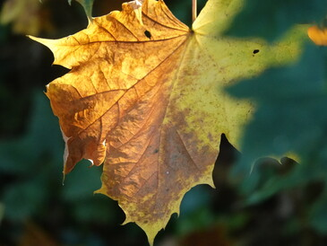
De natuur
Natuur heeft een goede invloed op ons welzijn. Dat komt door de positieve associatie die we ermee verbinden. We zoeken de natuur op tijdens vakanties of vrije tijd. Dat heeft een kalmerend effect op de geest.
vind rust en groei door beweging
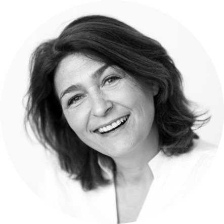
Evelien Moes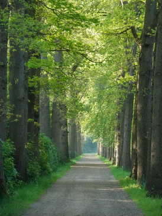
Ik coach vrouwen die op een keerpunt in hun leven zoeken naar wie ze (nu) zijn, die worstelen met vragen als: ‘Wie ben ik nu?’, ‘Wat is mijn rol nog?’ of ‘Wat geeft mijn leven betekenis?’ Dit doe ik wandelend in de rust en ruimte van de natuur.
Door samen de natuur in te gaan, help ik hen opnieuw verbinding te maken met zichzelf, zodat ze weer richting voelen en met vertrouwen nieuwe stappen zetten.
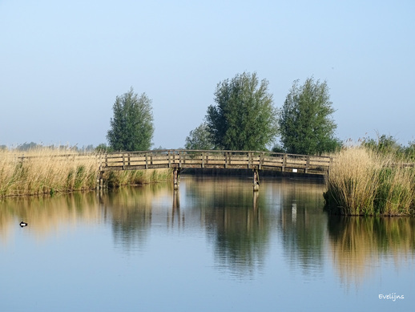
Zoek je meer balans, energie en rust in je leven? Als wandelcoach help ik je letterlijk én figuurlijk in beweging te komen. Of je nu wilt afvallen, gezonder wilt leven, stress wilt verminderen of je gewoon beter in je vel wilt voelen – samen werken we aan duurzame verandering, in kleine en haalbare stappen.
Wandelen is niet alleen goed voor je lichaam, maar ook voor je geest. Of je nu worstelt met de drukte van alledag, voor een lastige keuze staat, of op zoek bent naar meer innerlijke rust, wandelcoaching biedt jou de ruimte om helder te denken en dichter bij jezelf te komen.
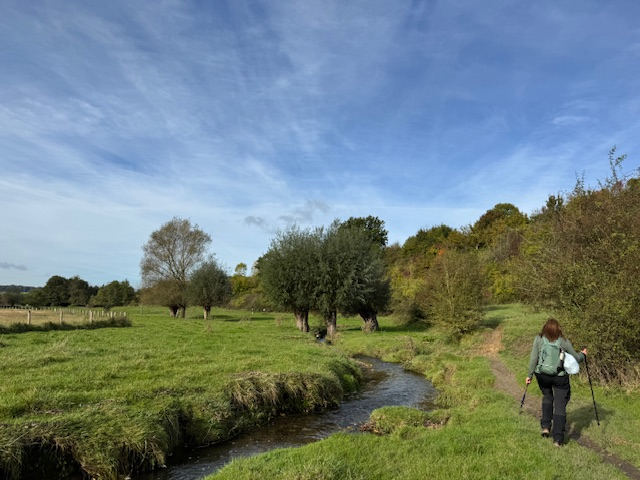
Geen gesprekken tussen vier muren, maar buiten in de natuur. Buiten zijn doet iets met je – het brengt rust én beweging. Wandelen ontspant en zet tegelijkertijd je brein aan het werk. Terwijl je loopt, orden je makkelijker je gedachten. Inzichten komen vaak vanzelf, zonder dat je er hard naar hoeft te zoeken.
Jij bepaalt het tempo. Ik loop met je mee - letterlijk en figuurlijk, ik stel de juiste vragen en help je jouw diepere verlangen te ontdekken.
De focus ligt niet op het probleem, maar op verlangen en groei. We gaan niet eindeloos graven in wat niet werkt, maar richten ons op jouw krachten, kwaliteiten en talenten. Wat geeft jou energie? Welke kleine stap kun je vandaag al zetten? Dat geeft lucht én richting.
Als je loopt, komt er vanzelf iets in beweging – in je lijf, maar ook in je hoofd en hart. Dat maakt wandelcoaching zo krachtig: je voelt al snel dat er echt iets verandert.
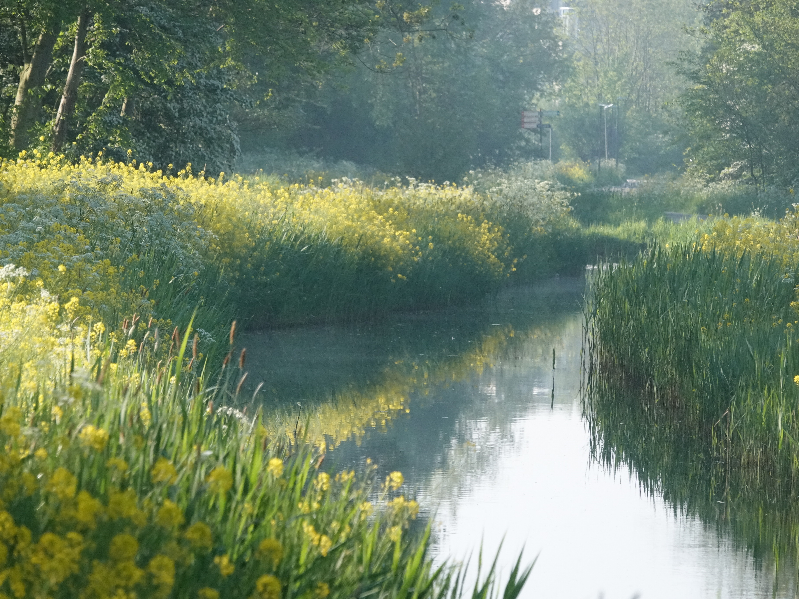
Voel je dat er meer in je zit dan er nu uitkomt? Alsof je op de automatische piloot leeft – gevangen tussen werkdruk, zorgen, relatieperikelen en te weinig tijd voor jezelf?
Ik help jou om opnieuw balans te vinden. Samen onderzoeken we wat er speelt, wat jij nodig hebt en waar je naartoe wilt. We brengen helderheid in je leefstijl, werk- en privéleven, stressbronnen en relaties. Zodat jij weer ruimte voelt. Rust in je hoofd. Energie in je lijf. En verbinding met wie jij werkelijk bent.
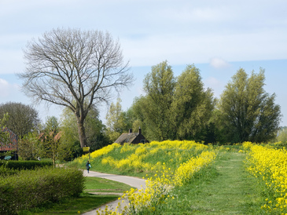
In de stilte van het bos, op een open veld of langs het kabbelende water gebeurt iets bijzonders: de natuur spiegelt. Zonder oordeel, zonder woorden. Wat we buiten zien, roept iets op vanbinnen. De wind die blaast, de bladeren die vallen, het ritme van de seizoenen – het zijn allemaal metaforen die ons iets kunnen vertellen over onszelf.
Wanneer je vertraagt en écht kijkt, kun je in de natuur jezelf tegenkomen. Een dode tak op je pad kan symbool staan voor iets dat je mag loslaten. Een vogel die opvliegt herinnert je misschien aan je verlangen naar vrijheid. En die kronkelige boom, die toch stevig geworteld staat, laat zien dat kracht niet altijd rechtlijnig hoeft te zijn.
De natuur biedt geen pasklare antwoorden, maar wel ruimte. Ruimte om te voelen, te reflecteren, te zijn. Ze nodigt je uit om naar binnen te keren en te luisteren naar wat er in jou leeft. Ineens wordt het helder: je hoeft niet harder je best te doen. Je hoeft alleen weer te luisteren. Naar jezelf!
Wie wandelt in de natuur, wandelt vaak ook een stukje dichter naar zichzelf toe.

Natuur heeft een goede invloed op ons welzijn. Dat komt door de positieve associatie die we ermee verbinden. We zoeken de natuur op tijdens vakanties of vrije tijd. Dat heeft een kalmerend effect op de geest.
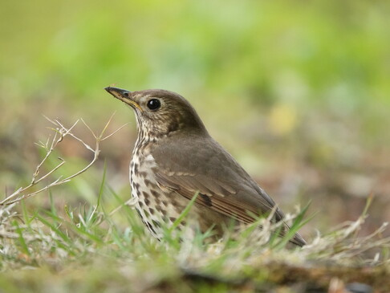
De kleur groen roept gevoelens op van natuur, groei, ontspanning, gezondheid en evenwicht. Het wordt geassocieerd met een vernieuwing en een evenwichtige geest.
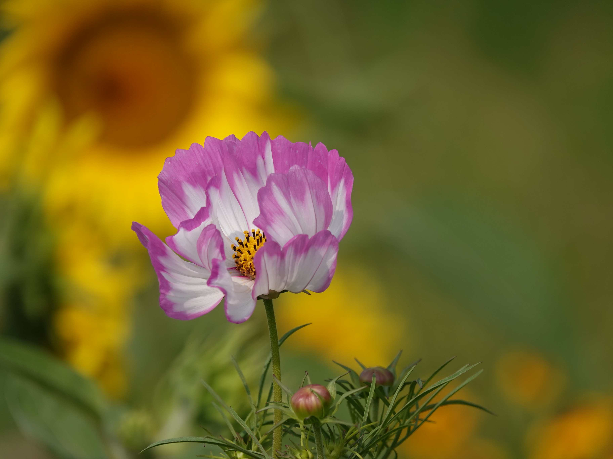
In de natuur vind je terugkerende, zelf herhalende patronen, die een kalmerende werking hebben op de geest.
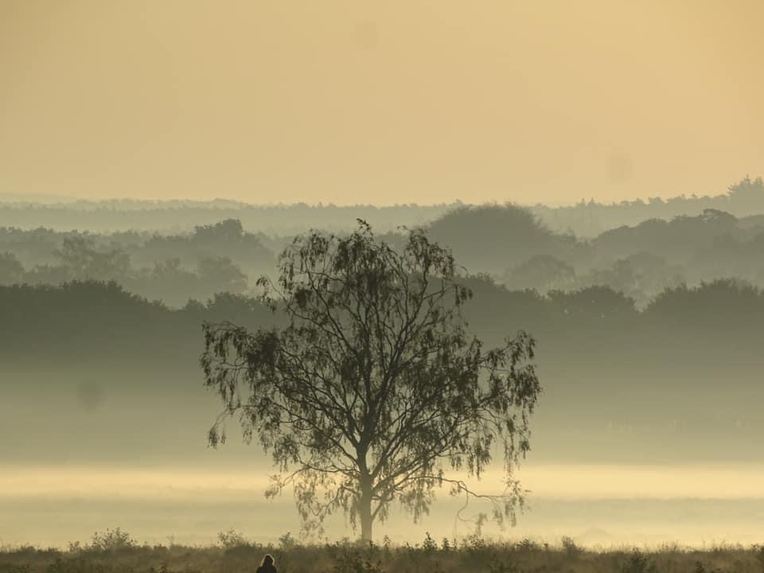
De frisse lucht en aangename geuren in de natuur dragen bij aan een gevoel van welzijn en ontspanning.
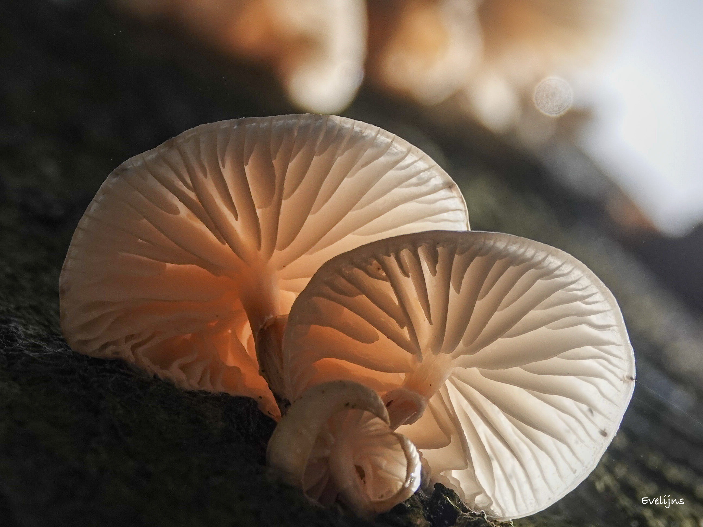
Bomen staan voor kracht, veerkracht en vitaliteit. De geur van bomen kan het immuunsysteem versterken en stress verminderen. Door je te verbinden met bomen en hun symboliek kun je nieuwe inzichten en energie opdoen die bijdragen aan persoonlijke groei en welzijn.
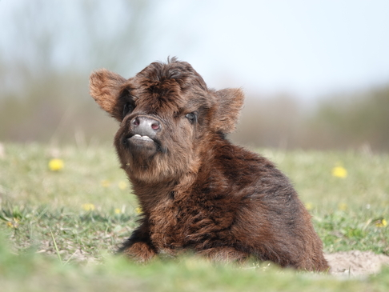
Het wandelen in een bosrijke omgeving bevordert een diepe ademhaling, wat bijdraagt aan ontspanning en welzijn.
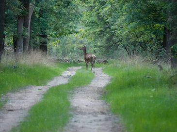
Betere doorbloeding van het brein: wandelen stimuleert de hartfunctie, waardoor er meer bloed naar de hersenen wordt gepompt.
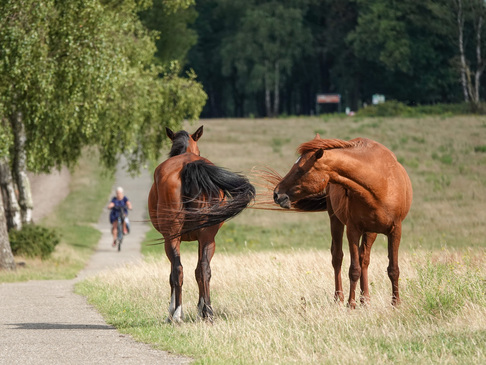
Stressvermindering en emotionele balans: tijdens het wandelen worden hersengebieden geactiveerd die negatieve emoties en stress remmen.
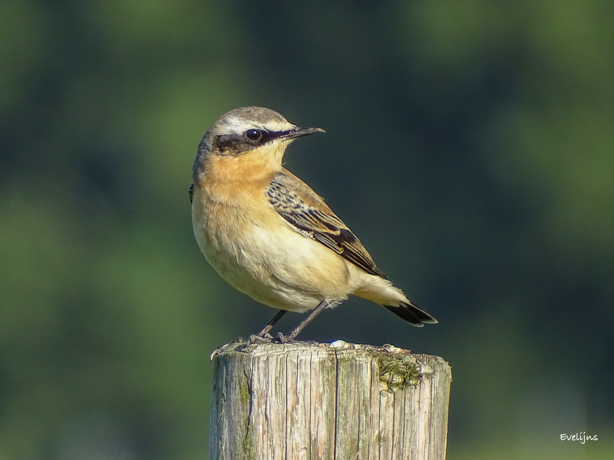
Multisensorische stimulatie in de natuur: de natuurlijke omgeving prikkelt verschillende zintuigen, zoals het ritselen van bladeren, de geur van bloemen of het gevoel van zon en wind op de huid.
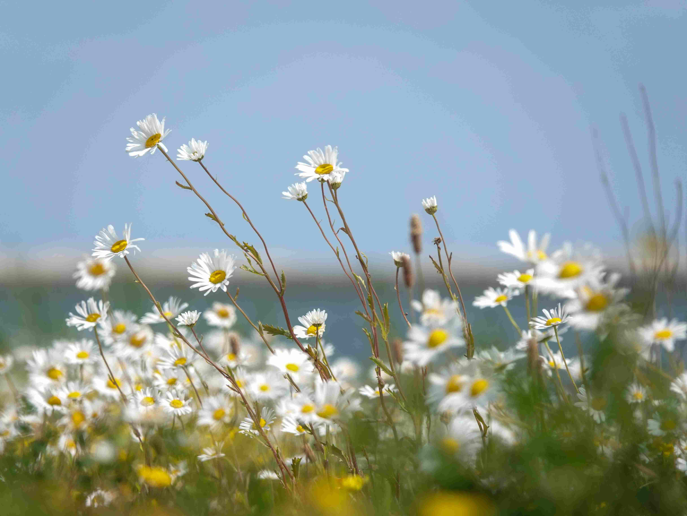
Verbeterde sociale interactie: wandelen bevordert open gesprekken en zelfreflectie.
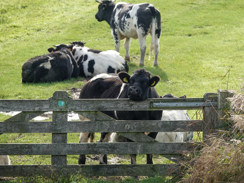
Activatie van het default mode-netwerk in de hersenen, dat geassocieerd wordt met creativiteit en introspectie.
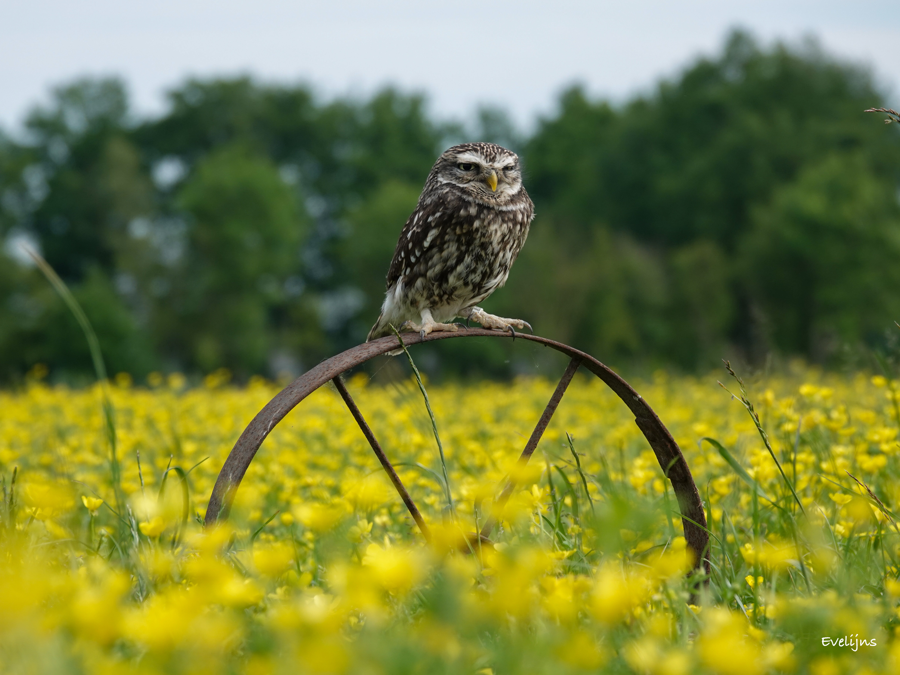
Verhoogde concentratie en geheugen.
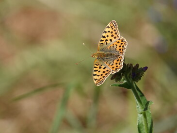
Wanneer mensen samen wandelen, stemmen ze onbewust hun loopritme op elkaar af, wat de sociale verbondenheid en communicatie bevordert.
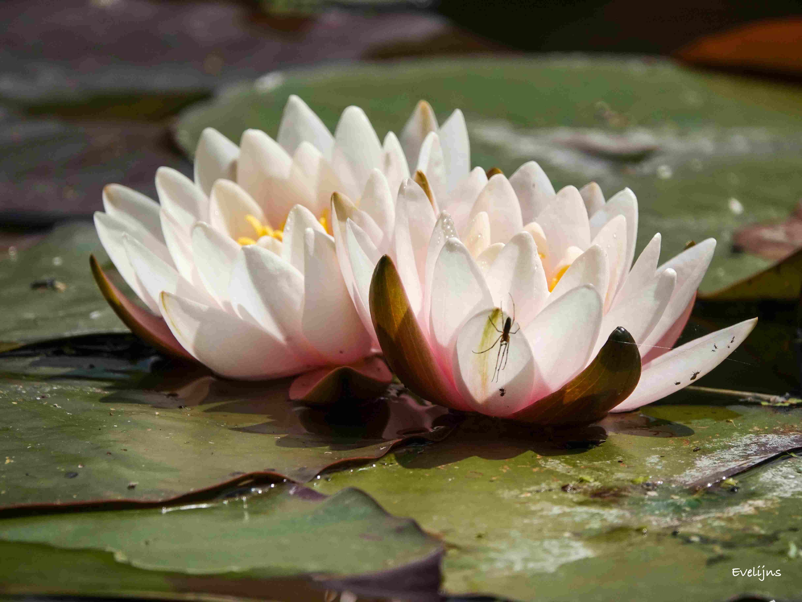
Iedereen bewandelt zijn of haar eigen pad.
Daarom bied ik trajecten op maat die aansluiten bij jouw behoeften en tempo.
We beginnen met een gratis telefonisch of persoonlijk kennismakingsgesprek. Jij kunt jouw verhaal doen en vragen stellen; ik leg uit wat wandelcoaching inhoudt. Zo voelen we samen of er een klik is.
Het persoonlijke wandelcoachtraject bestaat uit vijf wandelingen van ongeveer 1,5 uur. We gaan samen de natuur in en werken aan jouw persoonlijke doelen. Tussen de sessies zit meestal zo’n twee à drie weken. Je krijgt eventueel kleine opdrachten of tips mee om thuis verder mee aan de slag te gaan.
Kosten: het pakket van vijf wandelingen kost € 525,-.
Wil je eerst ervaren wat wandelcoaching is? Dan is een eenmalige sessie mogelijk. In ongeveer 1,5 uur wandelen we door een mooie omgeving terwijl we jouw vraag of dilemma verkennen. Je krijgt frisse inzichten en gaat vol energie weer naar huis.
Ben je nieuwsgierig geworden of heb je vragen? Neem dan gerust contact met mij op. Ik sta klaar om je meer te vertellen over wat ik voor jou kan betekenen.
Een eerste kennismakingsgesprek is gratis en vrijblijvend.
We gaan meteen samen de natuur in!
Elke wandeling is uniek, net als jij. Ik combineer gesprekken met beweging, zodat je niet alleen mentaal maar ook fysiek in beweging komt. We wandelen in een omgeving die bij jou past, een plek die jij prettig vindt, zoals: in een park, door het bos, langs het strand, in de duinen of op de heide.
Ik bied wandelcoaching aan in Den Haag en omgeving én op de Veluwe. We kiezen samen een wandelgebied dat voor jou goed voelt.
Ik ben flexibel in dagen en tijden.
Tijdens de wandeling stel ik vragen die jou helpen om jezelf beter te begrijpen, blokkades te herkennen en stappen te zetten naar verandering.
Er is ruimte voor reflectie, maar ook voor actie. Vraag je je af of je nog wel op je plek zit in je werk? Of je toe bent aan meer uitdaging? Voel je je moe na een werkdag en ontbreekt het je steeds vaker aan energie en zin? Ik help je graag door samen naar buiten te gaan en op ontdekkingstocht te gaan naar jouw verlangen.
Een luisterend oor
Geen vraag is te groot of te klein. Ik bied een veilige setting waarin jij je verhaal kunt delen.
Meer dan een gesprek
Het gaat niet alleen om praten en luisteren, maar ook op ontdekken en het zetten van concrete stappen.
Laagdrempelig en toegankelijk
Gesprekken in de buitenlucht voelen vaak minder formeel. Dat helpt je om je meer op je gemak te voelen en open te communiceren.
Wandelcoachen is geen bomen knuffelen! We doen praktische oefeningen in de natuur die je aan het denken zetten.
Ik sluit aan bij jouw tempo en behoefte. Niets moet, alles mag.
Een pakket van 5 wandelingen kost € 525,-. Mocht je behoefte hebben aan een extra wandeling. Een losse wandeling kost € 105,-.
Het is goed om te weten dat diverse werkgevers wandelcoaching (gedeeltelijk) vergoeden vanuit een Persoonsgebonden Budget (PGB) of het UWV. Het is raadzaam om bij je zorgverzekeraar of werkgever na te vragen of je in aanmerking komt voor vergoeding.
Kijk ook even op mijn sociale media:
Facebook Facebook
Instagram Instagram
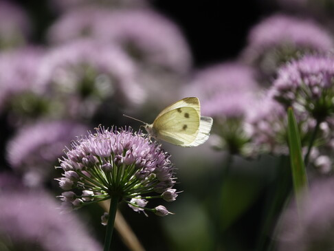
Als kind groeide ik op in de bossen.
Onze achtertuin grensde aan uitgestrekte weilanden, de voortuin liep over in het bos. Ik klom in de hoogste bomen en bouwde hutten tussen het groen. Zodra ik de natuur instap, gaan al mijn zintuigen aan. Ik haal diep adem, voel de frisse lucht, ruik de warme geur van naaldbomen of het vochtige bos na een regenbui. Buiten kijk ik om me heen en geniet van al het moois: reeën in het veld, fladderende vlinders, kwetterende vogels. De natuur brengt mij verwondering.
Na ruim 29 jaar in het onderwijs werd het tijd voor iets anders. Ik ben een buitenmens, en dat werd nog duidelijker in het eerste coronajaar. Nooit eerder wandelde ik zo veel. Die periode bracht me inzichten. Al wandelend werd ik creatiever en ontdekte ik mijn diepste verlangen: mensen helpen naar een gezonde(re) leefstijl.
Ik besloot de opleiding tot leefstijlcoach te volgen. Daarna was de stap naar wandelcoach vanzelfsprekend. Niet coachen binnen vier muren, maar met passie en aandacht buiten, in de natuur.
LinkedIn LinkedIn Evelien Moes
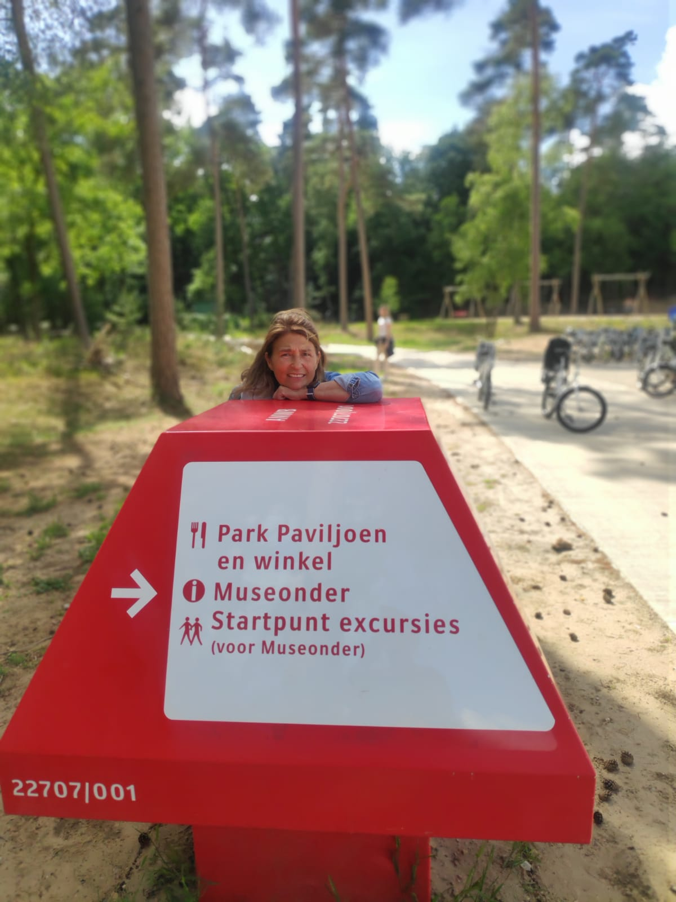
Ben je klaar om jezelf beter te leren kennen en de eerste stap te zetten naar verandering? Neem contact met mij op om een sessie te boeken of meer te weten over wandelcoaching.
Voorwaarden
{kind=link}
{kind=link}
{kind=link}
{kind=link}
{kind=link}
{kind=link}
{kind=link}
{kind=link}
{kind=link}
{kind=link}
{kind=link}
{kind=link}
{kind=link}
{kind=link}
{kind=link}
{kind=link}
{kind=link}
{kind=link}
{kind=link}
{kind=link}
{kind=link}
{kind=link}
{kind=link}
{kind=link}
{kind=link}
{kind=link}
{kind=link}